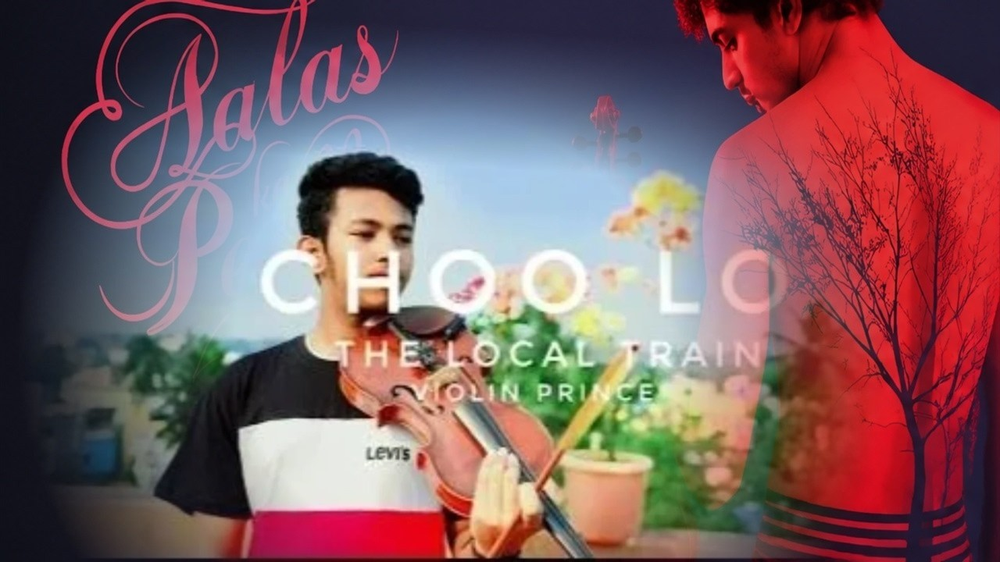

01 / The song's world
A small wish,
floating into the sky.
Dandelions carries a feeling of quiet hope — sweet, delicate, and touched by a little uncertainty. This page follows that mood through the warm tones of the violin and the image of seeds drifting on the air.
Some melodies feel like a thought you keep to yourself: not quite a confession, not quite a dream, but something that returns when the day grows quiet. Ruth B.'s Dandelions has that kind of gentle pull, balancing tenderness with a trace of longing.
On the violin, a melody can feel less like a sentence and more like a breath. A sustained note can linger; a phrase can rise and settle; a small pause can give the feeling time to land. Without the words in front, the listener has room to follow tone, movement, and the shape of the tune.
The dandelion is the visual thread of this listening experience: a delicate seed carried somewhere beyond the frame. It becomes a metaphor for music too — something made in one moment that can travel with someone long after the sound has ended.
This is an artistic reading of the song's atmosphere, not a claim about the songwriter's private intentions or a description of unverified recording techniques.